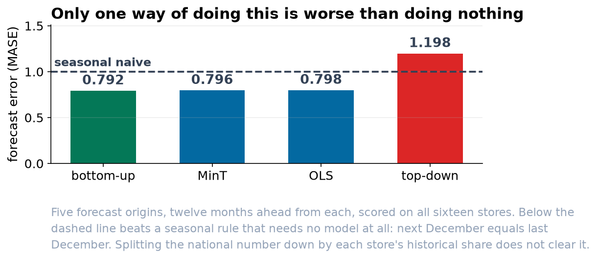

The Three Numbers in Next Year's Plan Do Not Add Up.
Each team forecast the part it is responsible for. The board's figure, the four regional figures and the sixteen store figures are all defensible, and they differ from each other by nearly eleven thousand units.
Recommendation
Build the plan from the stores upward, and do not let anyone build it by splitting the national number down. Adding the sixteen store forecasts together produced the most accurate numbers at every level in our testing. Splitting the national forecast down by each store's historical share produced store plans that were worse than assuming next December equals last December.
What went wrong with the three numbers we have
Nothing, individually. Each team forecast the series it owns, using the same method, on the same seven years of history. The board was shown a forecast of the chain. The regional managers produced four forecasts of four regions. The store managers produced sixteen forecasts of sixteen stores.
Added up, the three sets differ by 10,924 units out of about 1.3 million. That is under one percent, and it is still unusable. If the four regional targets sum to less than the number the board approved, then either a region is carrying a target nobody wrote down or the board's figure is unfunded. There is no error to find and no model to fix: three separate forecasts of three different series were never asked to agree with each other, and so they did not.
It is not the size of the gap that matters. It is that no single one of the three sets can be issued as the plan, because issuing any one of them contradicts the other two, and all three have already been shown to their audiences.
The method we recommend, and the one to rule out
Four ways of producing numbers that do add up were tested. Each was run five times, from five different points in the history, forecasting a year ahead each time, and scored against what actually happened.
| Approach | How it works | Verdict |
|---|---|---|
| Bottom-up | Forecast each store, add them up | Most accurate at every level. Recommended. |
| Optimal reconciliation | Keep all twenty-one forecasts, adjust them the smallest amount that makes them agree | Very close behind, and needs no judgment about which level to trust |
| Simple reconciliation | The same, treating every forecast as equally reliable | Slightly worse than the above, for no saving |
| Top-down | Forecast the chain, split it down by each store's historical share | Rule out. Worse than a no-model rule at store level. |

Why top-down fails, in two stores
Splitting the national number down assumes each store keeps the same share of the chain it has held on average. Two of our sixteen have been moving steadily.
| Store | Average share, six years | Share last year | What top-down would plan |
|---|---|---|---|
| WE2 | 10.1% | 15.8% | 37 percent below last year |
| SO3 | 4.5% | 2.5% | 79 percent above last year |
WE2 has grown from a tenth of the chain to a sixth. SO3 has more than halved. A six-year average splits the difference on both, so the plan would cut a growing store by more than a third and hand a shrinking one an increase of nearly eighty percent. Neither number could survive a conversation with the store manager, and neither would be noticed at the national level, because the chain total top-down produces is perfectly respectable.
What we are not claiming
Bottom-up is not always the right answer. It won here because our sixteen stores are each large enough to forecast individually and their errors mostly cancel when added together. On a chain of two hundred small stores, or on weekly rather than monthly numbers, the same test frequently comes out the other way. The recommendation is the result of the test, not a rule of thumb, and the test should be repeated when the estimate is next refreshed.
Adding up is not the same as being right. All four approaches above produce numbers that add up, including the one we are asking you to rule out.
Approve the bottom-up plan for next year, and add a standing rule that any future planning method is tested against the last five years before it is adopted. That test took an afternoon and it is the only reason we can tell you which of these four to use.